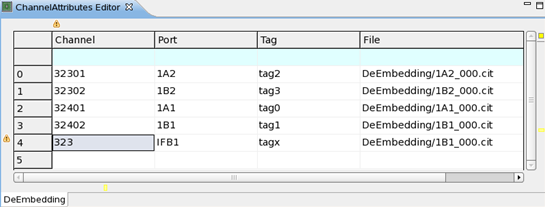

De-Embedding page of the Channel Attributes Editor
On the DeEmbedding page you can edit the system de-embedding parameters.
The editor features the default system functions for tables, for example annotation bars, sorting, filtering, content assist, and special for channel attributes: signal analyzer plotting of parameters (see Displaying data in the signal analyzer tool and Signal Analyzer Tool).
For additional information on annotations, see Annotation warnings.

Column |
Description |
|---|---|
Channel |
Channel number |
Port |
Port description |
Tag |
Tag relationship to the site |
File |
Path to the cit file which contains the S-parameters. For detailed information, see below in the Related information section |
Functional changes
- Introduced in SmarTest 7.1.0